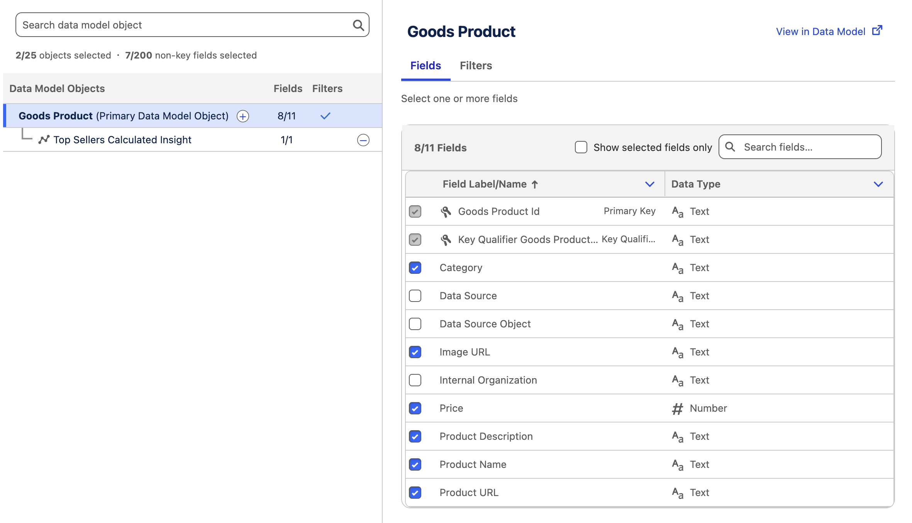

Introduction
Data graphs bring together structured data from your Data Model Objects (DMOs) in Data 360 and assembles them into an easy-to-use, unified view.
In this workshop, you will create a data graph for product data which will be used to power both a rules-based and objective-based recommender for website personalization.
Non-Product Item Data Graphs
In addition to creating item data graphs for products, you can also create an Item Data Graph for any DMO with the type Other to use with the personalization recommendations system. Common examples include articles, blogs, promotions, and other content-based data types.
Before starting the hands-on exercises in this workshop, watch the video below to learn about the different types of data graphs for personalization in Data 360 and key concepts.
Enter the password
LearnSPtoday
Deploy Calculated Insight
First you will deploy a calculated insight from a data kit so that it's available to include in a data graph definition.
- Select Calculated Insights tab from the Data Cloud app.
- Click New.
- Select the From a Data Kit tile in the New Insight dialog.
- Click Next.
- Select Top Sellers Calculated Insight.
- Click Next.
- Click Activate.
- Leave the schedule options as default settings and click Enable.
Purpose of This Calculated Insight
This calculated insight is built on the Goods Product DMO and uses the product-related event data ingested and mapped from the website. Its purpose is to calculate the total number of units sold for each product.
In the next exercise, you will add this calculated insight to a product data graph and reference it in a recommendations strategy. This allows you to return products ordered by total units sold, enabling a simple “most popular products” recommendation use case.
Create a Product Data Graph
With the calculated insight created, you can now create an item data graph that includes data from both the Goods Product DMO and calculated insight.
- Select the Data Graphs tab from the Data Cloud app.
- Click New.
- Leave the Start from Scratch tile selected, then click Next.
- Leave the Standard Data Graph tile selected, then click Next.
- Enter the value in the Data Graph Name field.
Products - Select Goods Product from the Primary Data Model Object menu.
- Click Next.
- In the Fields list, select the following fields:
- Category
- Image URL
- Price
- Product Description
- Product Name
- Product URL
Goods Product Fields
The selected fields can be used both in recommendation filter logic and returned as part of a personalization decision response.
- In the Data Model Objects tree, click the
icon next to Goods Product (Primary Data Model Object). - Select Top Sellers Calculated Insight. The field values and dimensions are automatically selected.
DMOs in Data Graphs
Any objects mapped within the same data space that have a defined relationship to the root DMO are available for selection in the data graph. For simplicity, you will not add additional objects to the item data graph in this exercise.
- Confirm the data graph structure and field count matches the screenshot below.

- Click Save and Build.
- In the Refresh Schedule modal, choose Every 30 Minutes from the Select a Refresh Interval menu.
- Click Save and Build.
Refresh Interval
The refresh interval determines how frequently the data graph is refreshed. This directly affects when newly added items become eligible to be returned in a recommendations response.